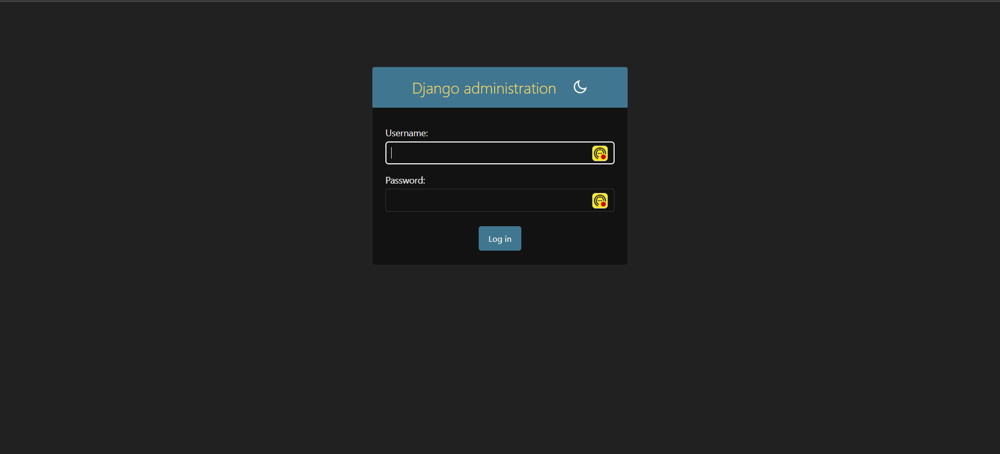
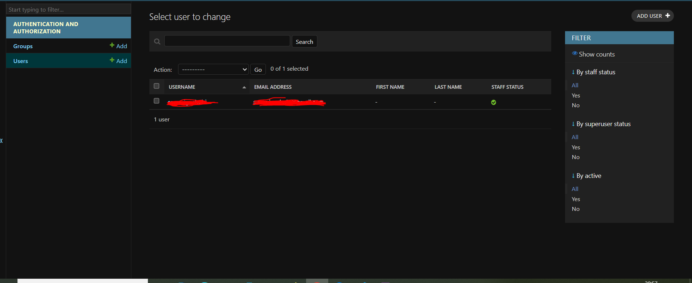
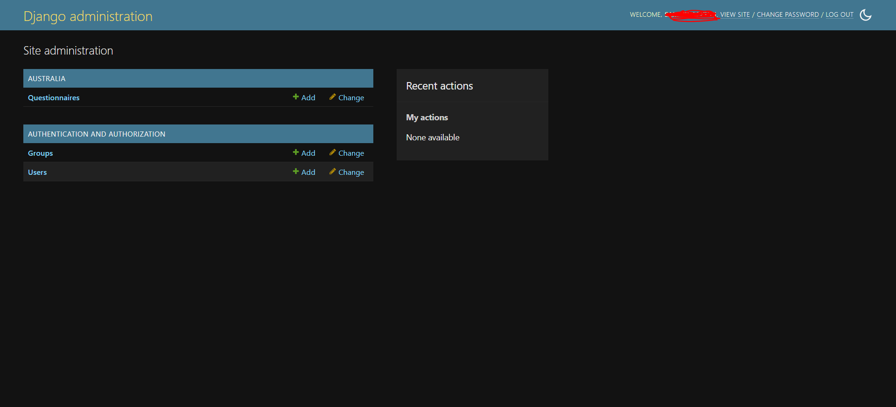
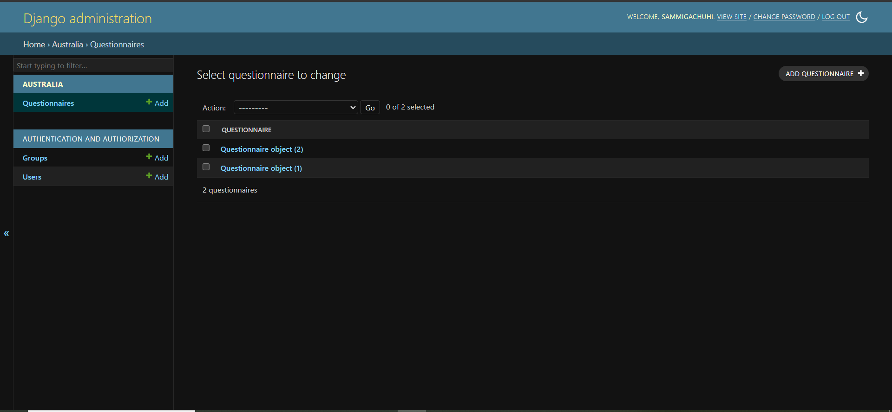

Chapter 10: Django admin
What is the Django admin?
Right after creating your models, creating the Django admin is the next step. But before we jump ahead of the gun, what exactly is Django Admin?
Django admin is an interface that allows developers to manage their projects. That is create, view, update and remove records from their applications. The Django Admin tool is very useful in that it can be the best playground to test whether your models are collecting the right data. Although it is effective on this, it is not the best tool to use if your intend to grow the customer base of your app. Not many people will appreciate this interface and it is recommended to integrate your app with a more sophisticated one.
Create super user
As the creator of your project, you will need to have a super account. This is an account that has all permissions.
To create your superuser account, go to your project level and type:
python3 manage.py createsuperuser
You will be prompted to enter a username, email and a password. When entering the password, don't panic if you can't see what you're typing. It is by design.
Username (leave blank to use 'sammigachuhi'): <your-username>
Email address: <optional-email-address>
Password:
Password (again):
Superuser created successfully.
Once you add yourself as the superuser, Django will add your credentials to the database as well.
Test login
To check whether you've been able to successfully create a superuser, restart the server.
Of course the server will by default route to this url: http://127.0.0.1:8000/. However, add admin at the end so that it is: http://127.0.0.1:8000/admin.
Django will take you to a login page like below.

Now login using the credentials you provided when creating the superuser account.
You will be taken to a new site like below.

If you click on the Users link, it will open a new interface which shows the users who currently have access to the Django admin site. You as the superuser are definitely one of them.

If you add other users into the Django admin site, their credentials will also appear here.
However, we can't see the models of our sanitation project anywhere.
Let's add them.
First, go to your australia/admin.py file.
Then import the model(s) you created. We use .models because we are importing models.py from within the same folder thus the use of the dot (.) before.
from django.contrib import admin
from .models import Questionnaire
Register your model.
# Register your models here.
class QuestionnaireAdmin(admin.ModelAdmin):
pass
admin.site.register(Questionnaire, QuestionnaireAdmin)
The admin.site.register() function registers our models in the Django Admin interface from whence we can perform our Create, Update and Delete (CRUD) functions.
The ModelAdmin class will be a representation of our model in the Django Admin interface. If you refresh your browser, you will see our Questionnaire model appear under the name of our application --Australia.

If you click on the Questionnaire model, you will see a list of our the two Questionnaires we created earlier in Django shell.

When you click on one of them, you will see the responses that we put in via Django shell. However, curiously, our survey_date and survey_time responses are missing.

All in all, using the Django admin is easier than Django shell, unless you are the type who prefers writing their birthdays in cron syntax!